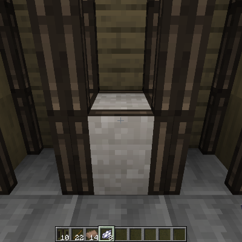

Стройматериалы
На ранних этапах игры строительство может быть сложной задачей, поскольку многие прочные строительные блоки требуют металлических инструментов для получения. Однако, есть несколько строительных блоков, которые можно получить с помощью каменных инструментов. Больше продвинутых строительных материалов доступно с металлическими инструментами.
Содержание
Сноп соломы
С помощью каменного ножа вы можете получить солому, ломая всё, что похоже на растения. Из соломы можно сделать очень простой строительный материал: сноп соломы. Сноп соломы — это легкий блок, который не подвержен гравитации, и игроки и другие существа могут проходить прямо сквозь него! Его можно переработать обратно в солому, если нужно.


4
Глиняные кирпичи
4
Глину можно найти в земле, или под реками и озёрами, или местами на низких болотистых равнинах. Возьмите немного соломы и сможете сделать мокрые глиняные кирпичи.
Структура
Их можно разместить на земле, и через день они высохнут, превратившись в глиняные кирпичи.
Высушенные глиняные кирпичи можно собрать в блоки глиняных кирпичей. Их также можно сделать в виде лестниц, плит или стен.
Структура
Все виды глиняных кирпичей.
Плетень с глиной
Плетень и глина — универсальный строительный и декоративный блок.
Плетень можно поставить, но он легко ломается и позволяет игрокам и существам проходить насквозь. Его можно укрепить с помощью глины и палок.

6

Чтобы сделать плетень твёрдым, его нужно сначала сплести, добавив до 4-ёх палок, а затем добавить комок гляняно-соломенной смеси.

2


2

Для плетения требуется четыре палки.
Палки можно добавлять по обеим диагоналям, сверху и снизу. Держите одну палку в руке и вставьте её, используя ПКМ. Выбрать часть плетня, к которой вы добавляете палку, можно направляясь на разные стороны плетня.
Добавление палок к плетню.
Использование глины на сплетённом плетне делает его твёрдым.
Плетень с глиной можно окрасить, используя краситель.
Глиняные блоки и торф
Глину, добытую из земли, можно превратить в глиняные блоки. Но при повторной добыче они превращаются обратно в глину. Несмотря на непривлекательный вид, их легко получить.
Торф встречается в мире залежами вдоль водоемов и может быть добыт каменными инструментами. На нем могут расти некоторые растения.
Торф очень легко воспламеняется!
Глиняные блоки